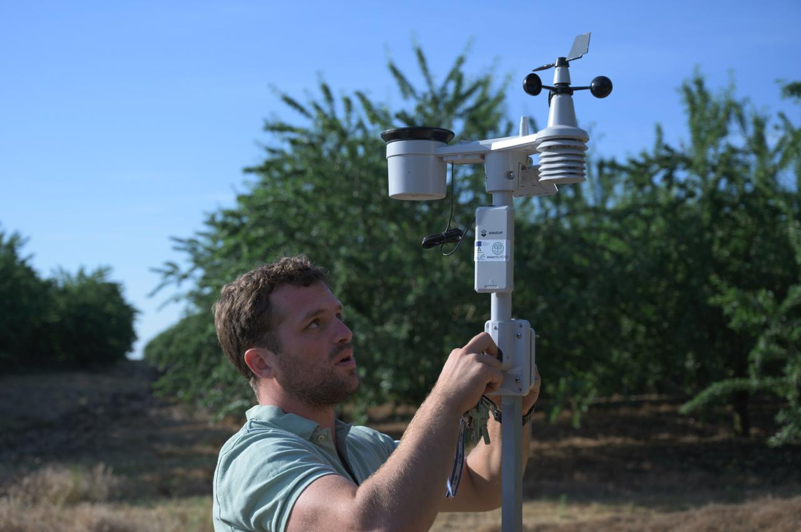
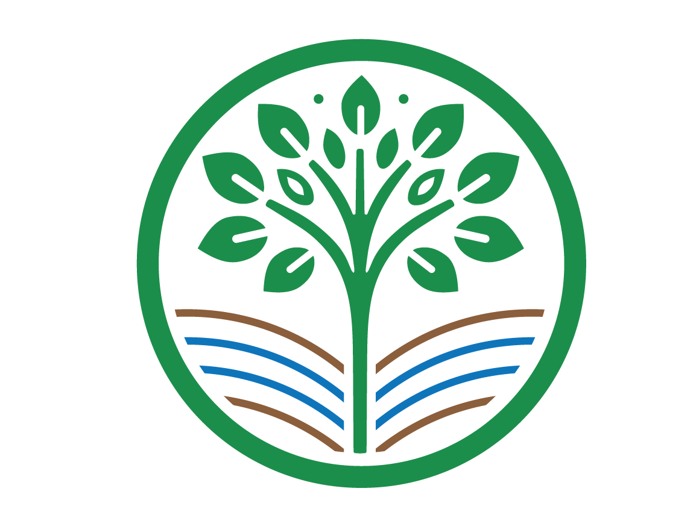
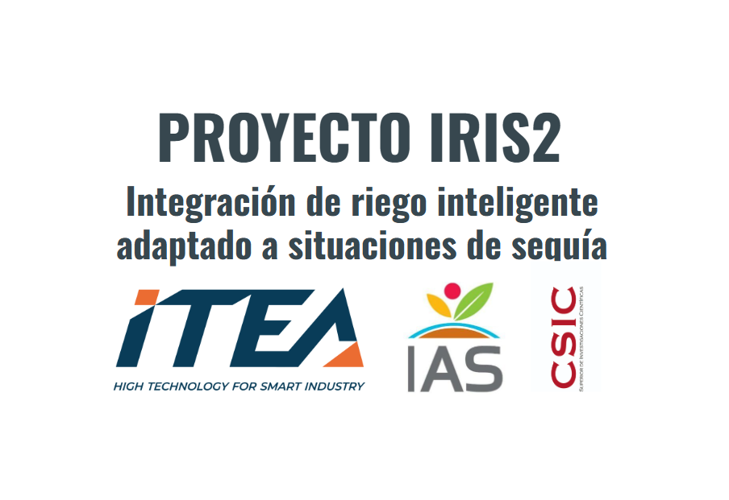
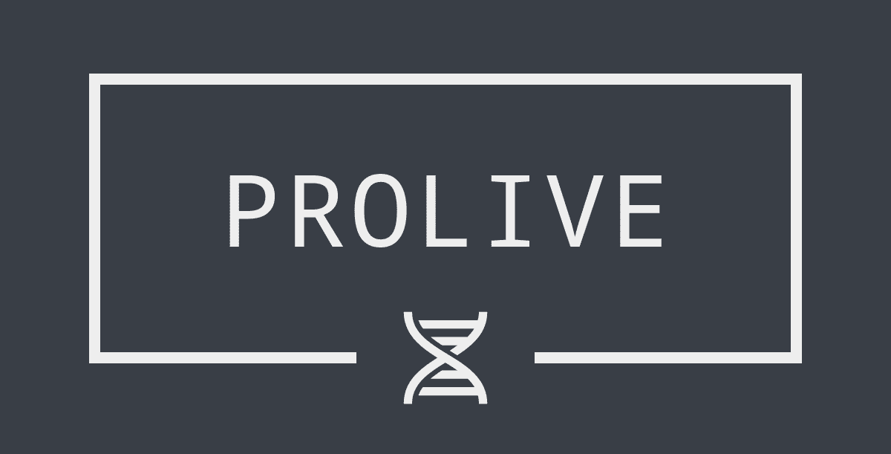

Ongoing scientific work in precision agriculture, smart irrigation, and agri-tech.

Doctoral research on irrigation optimization in fruit trees through detection of individual-tree variability under hydric stress. Combining aerial and terrestrial LiDAR, UAV thermography, and IoT sensor networks.
Learn more →
Operational team focused on the optimization of almond irrigation using IoT technology, smart weather stations, and remote sensors to enhance water use efficiency and environmental care at farm scale.
Learn more →
Developing flexible pumping control systems for optimized, sector-specific irrigation using user-friendly mobile and web applications for optimal irrigation scheduling and resource management.
In development
Project focused on providing practical solutions for olive grove management and understanding its genetics to develop varieties resistant to climate change effects, integrating remote sensing tools for phenotyping.
Learn more →